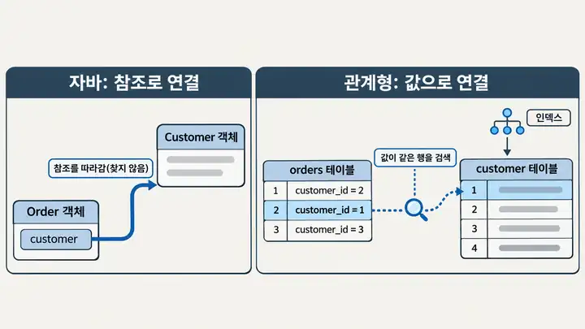
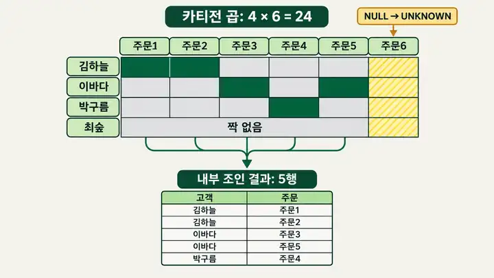
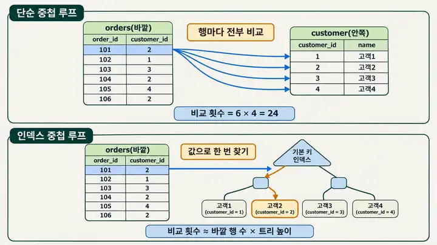
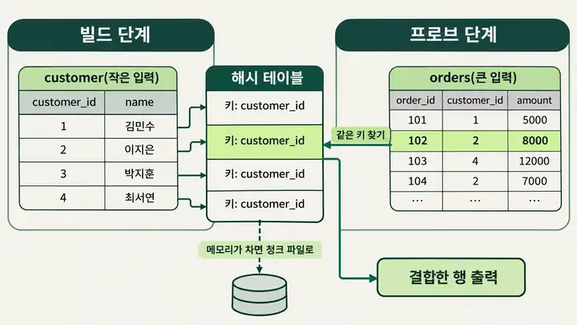

데이터베이스 기본편 / 01회
조인 1 — 내부 조인
테이블을 나눠 저장한 데이터를 다시 합치는 내부 조인을 카티전 곱과 조건의 조합으로 정의하고, MySQL 8.0 InnoDB가 그 정의를 중첩 루프·인덱스 탐색·해시 조인으로 실행하는 과정을 따라간다.
오늘 끝나면 할 수 있는 것
- 두 테이블의 행과 조인 조건이 주어지면 카티전 곱에서 출발해 내부 조인 결과의 행을 손으로 구하고, 결과 행 수가 왜 그렇게 되는지(일대다 관계, 짝이 없는 행, NULL 키) 설명할 수 있다.
- INNER JOIN ... ON, USING, 쉼표 조인을 MySQL의 문법 규칙(동의어 관계, 쉼표 연산자의 낮은 우선순위, 열 이름의 모호성)에 맞게 쓰고, 각 문법이 SELECT * 결과의 열 구성에 주는 차이를 말할 수 있다.
- 세 개 이상의 테이블을 조인하고 WHERE, GROUP BY, HAVING과 함께 써서 요구 사항을 쿼리로 옮기며, 조인 뒤 집계에서 값이 부풀려지는 행 증식(fan-out)을 찾아 고칠 수 있다.
- 중첩 루프 조인, 인덱스를 쓰는 중첩 루프, 해시 조인이 조건을 평가하는 횟수를 비교하고, EXPLAIN의 type 열(eq_ref, ref, ALL)과 Extra의 Using join buffer (hash join)가 무엇을 뜻하는지 읽을 수 있다.
핵심 강의 → 핵심 요약 → 실무 재판단 → 적용 연습 → 이해 확인
01 핵심 강의
이 강의의 차례 · 소제목 14개
이 회차의 질문: 나눠 놓은 데이터를 어떻게 다시 모으는가
데이터베이스 입문에서는 테이블 하나를 상대로 행을 넣고, 고르고, 정렬하고, 묶었다. 실제 서비스의 데이터는 테이블 하나에 담기지 않는다. 고객은 고객 테이블에, 상품은 상품 테이블에, 주문은 주문 테이블에 따로 있다. 그런데 화면이 원하는 것은 "누가 무엇을 몇 개 샀고 얼마를 냈는가"처럼 여러 테이블에 걸친 한 줄이다. 따로 저장한 것을 질의하는 순간에 다시 붙여야 한다. 그 일을 하는 연산이 조인(join)이다.
이 회차는 조인 가운데 가장 기본인 내부 조인(inner join)을 다룬다. 질문은 네 가지다. 첫째, 처음부터 한 테이블에 다 넣으면 조인이 필요 없을 텐데 왜 굳이 나누는가. 둘째, 내부 조인의 결과는 정확히 어떤 행들의 집합인가. 이 정의를 분명히 해 두면 결과 행 수를 예측할 수 있고, 행이 사라지거나 불어나는 이유를 설명할 수 있다. 셋째, 문법은 어떻게 쓰며 테이블이 셋, 넷으로 늘면 어떻게 확장되는가. 넷째, 데이터베이스는 그 정의를 실제로 어떤 알고리즘으로 계산하는가.
마지막 질문이 이 회차에서 가장 중요하다. 조인은 SQL 문장으로 보면 한 줄이지만, 엔진 안에서는 두 집합의 짝을 찾는 반복 작업이다. 짝을 찾는 방법에 따라 같은 결과를 내는 데 드는 일의 양이 수천 배씩 차이 난다. 그 차이를 만드는 것이 인덱스와 조인 알고리즘이고, 실행 계획(EXPLAIN)은 엔진이 어떤 방법을 골랐는지 보여 주는 창이다.
설명과 문법 규칙은 MySQL 8.0의 InnoDB 저장 엔진을 기준으로 한다. 결과 행은 직접 계산해 확인할 수 있도록 작은 데이터로 보여 준다. 실행 결과는 MySQL 8.4.13과 8.0.46에서 실행해 확인했고, 두 버전의 결과는 같았다. 조인 알고리즘의 동작은 같은 데이터를 자바 코드로 흉내 내어 비교 횟수를 세어 본다. 이 권의 다음 회차들과 범위를 나누어, 외부 조인과 기타 조인(교차 조인, 자기 조인 등)은 02회, 서브쿼리는 03회, B+Tree 인덱스의 구조는 05회와 06회에서 자세히 다룬다. 여기서는 그 주제들이 내부 조인과 맞닿는 지점만 짚는다.
조인이 필요한 이유: 한 테이블에 다 넣으면 생기는 일
주문 정보를 테이블 하나에 모두 담는다고 해 보자. 한 행에 주문 번호, 주문 날짜, 수량과 함께 고객 이름, 고객이 사는 도시, 상품 이름, 상품 가격을 모두 적는다. 조회는 간단해진다. 조인 없이 SELECT 한 번이면 화면에 필요한 모든 것이 나온다. 문제는 데이터를 바꿀 때 드러난다.
| order_id | customer_name | city | product_name | price | quantity |
|---|---|---|---|---|---|
| 1 | 김하늘 | 서울 | 키보드 | 50000 | 1 |
| 2 | 김하늘 | 서울 | 마우스 | 20000 | 2 |
| 3 | 이바다 | 부산 | 모니터 | 300000 | 1 |
| 5 | 이바다 | 부산 | 키보드 | 50000 | 2 |
김하늘이 부산으로 이사했다. 고객 한 사람의 정보가 바뀐 것인데, 이 테이블에서는 김하늘이 주문한 횟수만큼 행을 고쳐야 한다. 하나라도 빠뜨리면 같은 사람이 어떤 행에서는 서울, 어떤 행에서는 부산에 사는 모순이 생긴다. 이것을 갱신 이상(update anomaly)이라고 부른다. 키보드 가격을 바꿀 때도 마찬가지다. 게다가 이 구조에서는 아직 주문하지 않은 고객을 저장할 자리가 없다. 주문 행이 있어야 고객 정보도 있을 수 있기 때문이다. 반대로 어떤 고객의 마지막 주문을 지우면 그 고객이 존재했다는 사실까지 함께 사라진다. 각각 삽입 이상(insertion anomaly), 삭제 이상(deletion anomaly)이라고 한다.
해결책은 사실 하나를 한 곳에만 적는 것이다. 고객의 이름과 도시는 고객 테이블의 한 행에, 상품의 이름과 가격은 상품 테이블의 한 행에 둔다. 주문 테이블에는 "누가"와 "무엇을" 대신 고객 번호와 상품 번호만 적는다. 이렇게 테이블을 나누는 설계 원칙을 정규화(normalization)라고 한다. 정규화의 대가가 조인이다. 사실을 한 곳에만 적었으니, 여러 사실을 함께 보려면 질의할 때 다시 붙여야 한다.
여기서 관계형 데이터베이스가 테이블 사이의 관계를 어떻게 표현하는지 짚어 둘 필요가 있다. 자바에서 주문 객체가 고객 객체를 가리킨다면, 주문 객체의 필드에는 힙에 있는 고객 객체의 참조가 들어 있다. order.customer를 따라가는 일은 그 참조가 가리키는 곳으로 바로 가는 일이다. 찾는 과정이 없다. 관계형 모델에는 이런 참조가 없다. 주문 행에 들어 있는 것은 customer_id = 1이라는 값이고, 그 값은 "고객 테이블에서 기본 키가 1인 행"이라는 뜻일 뿐 그 행이 디스크 어디에 있는지는 알려 주지 않는다. 테이블 사이의 연결은 오직 값으로만 표현된다.
이 차이가 조인의 본질을 정한다. 조인은 값이 같은 행을 찾아 짝짓는 일이고, 찾는다는 것은 검색이다. 고객 테이블에 행이 네 개뿐이면 다 훑어봐도 그만이지만, 백만 개라면 주문 한 건마다 백만 행을 훑을 수는 없다. 그래서 데이터베이스는 값으로 행을 빨리 찾는 자료 구조, 곧 인덱스를 둔다. 조인의 비용을 이해하는 일은 결국 "값으로 행을 찾는 비용"을 이해하는 일이다. 이 회차 뒷부분의 실행 원리는 모두 이 한 문장에서 출발한다.

실습 데이터 준비
이 회차 전체에서 쓸 데이터는 작은 온라인 상점이다. 테이블은 셋이다. 고객(customer), 상품(product), 주문(orders)이다. 주문 테이블의 이름을 order가 아니라 orders로 지은 데는 이유가 있다. ORDER는 ORDER BY에 쓰이는 예약어라서 테이블 이름으로 쓰려면 매번 백틱으로 감싸야 한다. 설계 단계에서 예약어를 피해 두면 그런 번거로움이 사라진다.
단순하게 하려고 주문 한 건에는 상품 한 종류만 담는다고 정했다. 실제 상점이라면 주문 한 건에 여러 상품이 담기므로 주문 항목 테이블을 따로 두겠지만, 그 구조는 이 회차의 조인 원리를 바꾸지 않는다. 고객 테이블에는 적립 포인트(point)를 두었는데, 뒤에서 조인 뒤 집계가 값을 부풀리는 현상을 보여 줄 때 쓴다.
CREATE TABLE customer (
customer_id INT NOT NULL,
name VARCHAR(50) NOT NULL,
city VARCHAR(20) NOT NULL,
point INT NOT NULL DEFAULT 0,
PRIMARY KEY (customer_id)
);
CREATE TABLE product (
product_id INT NOT NULL,
name VARCHAR(50) NOT NULL,
price INT NOT NULL,
PRIMARY KEY (product_id)
);
CREATE TABLE orders (
order_id INT NOT NULL,
customer_id INT NULL, -- 비회원 주문이면 NULL
product_id INT NOT NULL,
quantity INT NOT NULL,
order_date DATE NOT NULL,
PRIMARY KEY (order_id),
CONSTRAINT fk_orders_customer FOREIGN KEY (customer_id) REFERENCES customer (customer_id),
CONSTRAINT fk_orders_product FOREIGN KEY (product_id) REFERENCES product (product_id)
);
INSERT INTO customer (customer_id, name, city, point) VALUES
(1, '김하늘', '서울', 1000),
(2, '이바다', '부산', 500),
(3, '박구름', '서울', 0),
(4, '최숲', '대전', 2000);
INSERT INTO product (product_id, name, price) VALUES
(1, '키보드', 50000),
(2, '마우스', 20000),
(3, '모니터', 300000),
(4, 'USB 허브', 15000);
INSERT INTO orders (order_id, customer_id, product_id, quantity, order_date) VALUES
(1, 1, 1, 1, '2026-03-02'),
(2, 1, 2, 2, '2026-03-02'),
(3, 2, 3, 1, '2026-03-05'),
(4, 3, 2, 1, '2026-03-07'),
(5, 2, 1, 2, '2026-03-09'),
(6, NULL, 2, 3, '2026-03-10');데이터에는 일부러 세 가지 "모서리"를 심어 두었다. 대전에 사는 최숲은 주문이 한 건도 없다. USB 허브는 한 번도 팔리지 않았다. 6번 주문은 비회원 주문이라 customer_id가 NULL이다. 이 셋이 내부 조인의 결과에서 어떻게 되는지가 이 회차의 첫 번째 관찰 대상이다. 미리 답을 말하면 셋 다 사라진다. 왜 사라지는지, 사라지는 것이 언제 문제가 되는지를 정의에서부터 따라가 볼 것이다.
외래 키 제약을 두 개 걸었다는 점도 기억해 두자. MySQL 매뉴얼은 외래 키 검사가 테이블 전체를 훑지 않도록 참조하는 쪽과 참조되는 쪽 모두에 인덱스를 요구한다. 참조하는 테이블(orders)에 외래 키 열을 맨 앞에 둔 인덱스가 없으면 InnoDB가 자동으로 만든다. 참조되는 쪽인 customer.customer_id와 product.product_id는 기본 키이므로 이미 인덱스가 있다. 결과적으로 이 스키마에서는 조인에 쓰일 네 열(orders.customer_id, orders.product_id, customer.customer_id, product.product_id)에 모두 인덱스가 있다. 이 사실은 뒤에서 조인 알고리즘을 볼 때 결정적인 역할을 한다.
customer orders product
+----+--------+------+-------+ +----+-------------+------------+-----+------+ +----+----------+--------+
| id | name | city | point | | id | customer_id | product_id | qty | date | | id | name | price |
+----+--------+------+-------+ +----+-------------+------------+-----+------+ +----+----------+--------+
| 1 | 김하늘 | 서울 | 1000 |<--| 1 | 1 | 1 | 1 | 3/02 |-->| 1 | 키보드 | 50000 |
| 2 | 이바다 | 부산 | 500 |<--| 2 | 1 | 2 | 2 | 3/02 |-->| 2 | 마우스 | 20000 |
| 3 | 박구름 | 서울 | 0 |<--| 3 | 2 | 3 | 1 | 3/05 |-->| 3 | 모니터 | 300000 |
| 4 | 최숲 | 대전 | 2000 | | 4 | 3 | 2 | 1 | 3/07 | | 4 | USB 허브 | 15000 |
+----+--------+------+-------+ | 5 | 2 | 1 | 2 | 3/09 | +----+----------+--------+
(4번: 주문 없음) | 6 | NULL | 2 | 3 | 3/10 | (4번: 판매 없음)
+----+-------------+------------+-----+------+
(6번: 비회원 주문)
화살표는 "이 값과 같은 기본 키를 가진 행"을 뜻할 뿐, 저장된 포인터가 아니다.
조인의 논리적 정의: 모든 짝을 만들고 조건으로 거른다
내부 조인의 결과가 무엇인지는 두 단계로 정의할 수 있다. 먼저 두 테이블의 모든 행 짝을 만든다. 왼쪽 테이블의 행 하나와 오른쪽 테이블의 행 하나를 이어 붙인 것이 짝 하나다. 왼쪽에 행이 m개, 오른쪽에 n개 있으면 짝은 m × n개다. 이 모든 짝의 집합을 카티전 곱(Cartesian product)이라고 한다. 다음으로 그 짝 가운데 조인 조건이 참인 것만 남긴다. 남은 짝들이 내부 조인의 결과다. 관계 대수(relational algebra)로 쓰면 R ⋈θ S = σθ(R × S)이다. 곱(×)을 만들고 선택(σ)으로 거른다는 뜻이다.
우리 데이터로 해 보자. 고객 4행과 주문 6행의 카티전 곱은 24개의 짝이다. MySQL에서 조건 없이 두 테이블을 조인하면 실제로 이 24행이 나온다. MySQL 매뉴얼은 조인 조건이 없을 때 INNER JOIN과 쉼표가 의미상 같으며 둘 다 카티전 곱을 만든다고 적고 있다.
SELECT COUNT(*) FROM customer CROSS JOIN orders; -- 24
SELECT COUNT(*) FROM customer JOIN orders; -- MySQL에서는 이것도 2424개의 짝에 조건 customer.customer_id = orders.customer_id를 하나씩 대어 보면 다음과 같다. 표의 칸은 (고객 번호, 주문 번호)의 짝이고, 칸 안의 기호는 조건을 평가한 결과다.
orders → 1(c=1) 2(c=1) 3(c=2) 4(c=3) 5(c=2) 6(c=NULL) customer ↓ 1 김하늘 TRUE TRUE false false false UNKNOWN 2 이바다 false false TRUE false TRUE UNKNOWN 3 박구름 false false false TRUE false UNKNOWN 4 최숲 false false false false false UNKNOWN 24개의 짝 중 TRUE인 짝은 5개 → 내부 조인 결과는 5행 false와 UNKNOWN은 모두 버려진다.
결과는 TRUE인 다섯 짝이다. 이 표에서 앞에서 심어 둔 세 모서리가 모두 설명된다. 최숲의 행(4번 고객)은 모든 칸이 false다. 짝지어질 주문이 없으니 결과에 한 번도 나타나지 않는다. 6번 주문의 열은 모든 칸이 UNKNOWN이다. 데이터베이스 입문에서 본 3값 논리(three-valued logic)에 따라 NULL과 어떤 값을 =로 비교하면 참도 거짓도 아닌 UNKNOWN이 되고, 조건이 TRUE인 짝만 남기는 규칙에 따라 버려진다. NULL끼리 비교해도 UNKNOWN이므로, 설령 고객 테이블에 NULL 키가 있었더라도 6번 주문은 짝을 찾지 못한다. 이것이 "NULL은 어떤 값과도, 심지어 NULL과도 같지 않다"는 규칙이 조인에서 드러나는 모습이다. MySQL에는 NULL끼리를 같다고 보는 NULL 안전 비교 연산자 <=>가 따로 있지만, 외래 키를 잇는 일반적인 조인에서 쓸 일은 드물다.
여기서 오해하지 말아야 할 점이 있다. 이 정의는 결과가 무엇인지를 말할 뿐, 계산을 그렇게 하라는 뜻이 아니다. 데이터베이스가 정말로 24개의 짝을 모두 만들고 나서 거른다면, 백만 행과 천만 행을 조인할 때 10조 개의 짝을 만들어야 한다. 실제 엔진은 같은 결과를 훨씬 적은 일로 얻는 방법을 쓴다. 정의와 실행을 분리해서 생각하는 습관이 이 회차 전체의 뼈대다. 정의는 "무엇이 나와야 하는가"를 알려 주고, 실행은 "어떻게 빨리 얻는가"를 다룬다. 결과를 예측할 때는 정의로, 성능을 따질 때는 실행으로 생각한다.

내부 조인 1: 문법을 한 줄씩 읽기
표준적인 내부 조인 문법은 FROM 왼쪽 테이블 INNER JOIN 오른쪽 테이블 ON 조건이다. 주문마다 주문한 고객의 이름을 붙여 보자.
SELECT o.order_id, o.customer_id, c.name, o.product_id, o.quantity
FROM orders o
INNER JOIN customer c ON o.customer_id = c.customer_id
ORDER BY o.order_id;+----------+-------------+--------+------------+----------+
| order_id | customer_id | name | product_id | quantity |
+----------+-------------+--------+------------+----------+
| 1 | 1 | 김하늘 | 1 | 1 |
| 2 | 1 | 김하늘 | 2 | 2 |
| 3 | 2 | 이바다 | 3 | 1 |
| 4 | 3 | 박구름 | 2 | 1 |
| 5 | 2 | 이바다 | 1 | 2 |
+----------+-------------+--------+------------+----------+앞의 격자에서 TRUE였던 다섯 짝이 그대로 나왔다. 한 줄씩 읽어 보자. FROM orders o의 o는 테이블 별칭(table alias)이다. 별칭을 붙이면 이 쿼리 안에서 orders를 o라고 부를 수 있다. 정확히 말하면 별칭을 붙인 뒤에는 원래 이름이 아니라 별칭으로 불러야 한다. AS를 넣어 orders AS o라고 써도 같다.
INNER JOIN customer c는 오른쪽에 붙일 테이블이다. INNER는 생략할 수 있어서 JOIN만 써도 내부 조인이다. ON o.customer_id = c.customer_id가 조인 조건이다. MySQL 매뉴얼에 따르면 ON에는 WHERE에 쓸 수 있는 어떤 조건식이든 쓸 수 있다. 등호가 아니어도, 여러 조건을 AND로 묶어도 된다. 다만 매뉴얼은 일반적으로 ON에는 테이블을 어떻게 잇는지를, WHERE에는 결과에 어떤 행을 남길지를 쓰라고 권한다. 이 구분은 내부 조인에서는 결과를 바꾸지 않지만 02회의 외부 조인에서는 결과를 바꾼다. 그 이유는 뒤에서 다시 본다.
o.customer_id처럼 열 이름 앞에 테이블 이름이나 별칭을 붙이는 것을 열 한정(qualification)이라고 한다. 두 테이블에 customer_id라는 같은 이름의 열이 있으므로, 어느 쪽 열인지 밝히지 않으면 MySQL은 고를 수 없다. 실제로 SELECT customer_id, name FROM orders o JOIN customer c ON o.customer_id = c.customer_id를 실행하면 다음 오류가 난다.
ERROR 1052 (23000): Column 'customer_id' in field list is ambiguous반면 name은 customer에만 있으므로 한정하지 않아도 오류가 나지 않는다. 그렇다고 한정을 빼는 습관은 위험하다. 나중에 누군가 orders에 name이라는 열을 추가하면, 어제까지 잘 돌던 쿼리가 갑자기 1052 오류로 멈춘다. 조인하는 쿼리에서는 모든 열을 한정하는 것이 안전하다.
SELECT *와 같은 이름의 열
조인 결과에 SELECT *를 쓰면 양쪽 테이블의 모든 열이 나온다. customer의 열 네 개와 orders의 열 다섯 개, 모두 아홉 개다. customer_id는 양쪽에 다 있으므로 결과에 두 번 나타난다. 내부 조인에서는 두 값이 늘 같다(조건이 그 둘을 같다고 요구했으니까). 그래서 중복이 해롭지 않아 보이지만, 이 결과를 애플리케이션에서 이름으로 읽을 때 문제가 된다. JDBC의 ResultSet Javadoc은 열 이름으로 값을 꺼낼 때 같은 이름의 열이 여럿이면 첫 번째로 일치하는 열의 값을 돌려준다고 정해 두었다. 내부 조인에서는 우연히 같은 값이라 버그가 드러나지 않다가, 02회의 외부 조인으로 바꾸는 순간 한쪽이 NULL이 되면서 엉뚱한 쪽 값을 읽게 된다. 조인 쿼리에서 SELECT *를 피하고 필요한 열을 한정해 나열하는 이유다.
USING: 같은 이름의 열로 잇는 줄임 문법
조인 조건이 "양쪽의 같은 이름 열이 같다"라면 USING으로 줄여 쓸 수 있다.
SELECT *
FROM customer
JOIN orders USING (customer_id)
ORDER BY order_id;행은 ON customer.customer_id = orders.customer_id와 같다. 다른 것은 SELECT *의 열 구성이다. MySQL 매뉴얼에 따르면 USING 조인에서 SELECT *는 공통 열을 하나로 합친(coalesced) 값만 돌려주고, 같은 조건의 ON 조인은 양쪽 열을 모두 돌려준다. 열의 순서도 정해져 있다. 합쳐진 공통 열이 첫 테이블에서의 순서대로 먼저 나오고, 다음에 첫 테이블에만 있는 열, 그다음에 둘째 테이블에만 있는 열이 나온다. 그래서 위 쿼리의 열은 customer_id, name, city, point, order_id, product_id, quantity, order_date의 여덟 개다. 합쳐진 열의 값은 COALESCE(customer.customer_id, orders.customer_id)로 정의되는데, 내부 조인에서는 두 값이 같으므로 차이가 없고 외부 조인에서 의미가 생긴다.
USING은 양쪽 열 이름이 같아야만 쓸 수 있다. 우리 스키마처럼 외래 키 열과 참조하는 기본 키 열의 이름을 똑같이 customer_id로 맞춰 두면 쓸 수 있고, 한쪽이 id, 다른 쪽이 customer_id라면 쓸 수 없다. 공통 열을 모두 자동으로 찾아 USING을 만들어 주는 NATURAL JOIN도 있지만, 열 이름이 우연히 겹치면(예를 들어 두 테이블 모두 name이 있으면) 그것까지 조인 조건이 되어 버린다. 우리 스키마에서 customer NATURAL JOIN product는 name이 같은 행끼리 이어 버린다. 조건이 쿼리 문장에 드러나지 않는다는 점이 위험하므로 실무에서는 잘 쓰지 않는다.
쉼표 조인과 연산자 우선순위
JOIN 문법이 쓰이기 전부터 쓰던 형태가 쉼표 조인이다. FROM에 테이블을 쉼표로 늘어놓고 조인 조건을 WHERE에 쓴다.
SELECT o.order_id, c.name
FROM orders o, customer c
WHERE o.customer_id = c.customer_id;내부 조인에서는 이 쿼리와 JOIN ... ON 쿼리의 결과가 같다. 쉼표가 만든 카티전 곱을 WHERE가 거르니, 정의 그대로다. 그런데 쉼표 조인과 JOIN을 한 쿼리에 섞으면 함정이 있다. MySQL 매뉴얼은 쉼표 연산자의 우선순위가 INNER JOIN, CROSS JOIN, LEFT JOIN 등보다 낮다고 밝힌다. t1, t2 JOIN t3는 ((t1, t2) JOIN t3)가 아니라 (t1, (t2 JOIN t3))로 해석된다.
SELECT *
FROM customer c, orders o
JOIN product p ON o.product_id = p.product_id
AND c.customer_id = o.customer_id;이 쿼리는 orders JOIN product를 먼저 묶고 그 결과와 customer를 쉼표로 잇는다. 그런데 ON은 orders JOIN product에 붙어 있으므로 그 안에서는 c가 보이지 않는다. 그래서 MySQL 8.4.13과 8.0.46 모두 ERROR 1054 (42S22): Unknown column 'c.customer_id' in 'on clause' 오류를 낸다. 매뉴얼도 쉼표 조인과 다른 조인을 섞을 때 이런 형태의 오류가 날 수 있다고 경고한다. 해결책은 섞지 않는 것이다. 모두 JOIN ... ON으로 쓰면 조인 조건이 각 조인 옆에 붙어 무엇과 무엇을 잇는지가 문장에서 바로 보인다.
MySQL에서 JOIN, INNER JOIN, CROSS JOIN은 같은 말이다
MySQL 매뉴얼은 MySQL에서 JOIN, CROSS JOIN, INNER JOIN이 문법적으로 동등해서 서로 바꿔 쓸 수 있다고 적는다. 그리고 표준 SQL에서는 그렇지 않아서 INNER JOIN은 ON과 함께, CROSS JOIN은 조건 없이 쓴다고 덧붙인다. 이 차이는 실수 하나를 조용히 통과시킨다. 표준을 엄격히 따르는 데이터베이스라면 ON 없는 INNER JOIN은 문법 오류지만, MySQL에서는 오류 없이 카티전 곱을 돌려준다. 앞에서 SELECT COUNT(*) FROM customer JOIN orders가 24를 돌려준 것이 그 예다. 조인 조건을 빠뜨린 쿼리가 오류로 막히지 않고 엄청난 수의 행을 만들어 낸다면, 가장 먼저 ON이 제자리에 있는지 확인해야 한다.
결과의 행 수는 무엇이 정하는가
조인 결과를 받아 들고 가장 먼저 해야 할 일은 행 수가 맞는지 확인하는 것이다. 행 수가 예상과 다르면 결과의 다른 모든 숫자도 믿을 수 없다. 정의로 돌아가면 행 수를 계산하는 규칙이 바로 나온다. 왼쪽 테이블의 각 행에 대해, 조건을 TRUE로 만드는 오른쪽 행의 수를 센다. 그 수를 모두 더한 것이 결과 행 수다.
우리 데이터에서 고객 쪽에서 세어 보면 김하늘 2, 이바다 2, 박구름 1, 최숲 0이므로 합은 5다. 주문 쪽에서 세어 보면 1번부터 5번 주문은 각각 1, 6번 주문은 0이므로 역시 5다. 어느 쪽에서 세든 같은 짝을 세는 것이므로 답은 같다. 이 단순한 규칙에서 내부 조인의 세 가지 성질이 나온다.
- 짝이 0개인 행은 결과에서 사라진다. 최숲, USB 허브, 6번 주문이 그렇다. "모든 고객의 주문 수"를 내부 조인으로 구하면 주문이 없는 고객은 0으로 나오는 것이 아니라 아예 목록에 없다. 짝이 없는 행도 남기고 싶다면 외부 조인이 필요하다(02회).
- 짝이 k개인 행은 k번 반복된다. 김하늘은 주문이 두 건이므로 결과에 두 번 나온다. 고객 한 명에 주문 여러 건이 걸리는 일대다(one-to-many) 관계를 "일" 쪽에서 조인하면, "일" 쪽 행은 "다" 쪽 짝의 수만큼 복제된다.
- 외래 키를 따라 "다"에서 "일"로 가는 조인은 행 수를 늘리지 않는다. 주문 한 건의
customer_id는 고객 테이블의 기본 키를 가리키고, 기본 키는 유일하므로 짝은 많아야 하나다. 그래서orders JOIN customer의 결과는 주문 수를 넘지 않는다. 같아지지 않고 줄어드는 경우는 외래 키 값이 NULL이어서 짝을 못 찾을 때뿐이다(외래 키 제약 덕분에 NULL이 아닌 값은 반드시 짝이 있다).
세 번째 성질은 실무에서 쓸모가 크다. 주문 목록 화면에 고객 이름과 상품 이름을 붙이는 쿼리를 쓴다면, 주문 테이블에서 출발해 외래 키를 따라 기본 키 쪽으로만 조인하는 한 결과 행 수는 주문 수를 넘지 않는다. 그런데 조인 조건이 기본 키가 아닌 열을 향하면 이 보장이 깨진다. 예를 들어 customer와 orders를 customer_id가 아니라 실수로 다른 열로 이었다면, 짝이 여러 개씩 생기면서 결과가 불어난다. 행 수를 확인하는 습관은 이런 실수를 잡는 가장 값싼 방법이다.
행 증식이 집계를 망가뜨리는 경우
"일" 쪽 행이 복제된다는 두 번째 성질은 집계와 만나면 조용히 틀린 숫자를 만든다. 주문한 적이 있는 고객들의 적립 포인트 합계를 구한다고 하자. 주문이 있는 고객만 골라야 하니 조인을 쓰기로 하고 이렇게 썼다.
SELECT SUM(c.point)
FROM customer c
JOIN orders o ON c.customer_id = o.customer_id;+--------------+
| SUM(c.point) |
+--------------+
| 3000 |
+--------------+주문이 있는 고객은 김하늘(1000), 이바다(500), 박구름(0)이므로 정답은 1500이다. 그런데 결과는 3000이다. 조인 결과에서 김하늘의 행은 두 번, 이바다의 행도 두 번 나오기 때문에 1000 × 2 + 500 × 2 + 0 × 1 = 3000이 되었다. 문법 오류도 경고도 없다. 이 현상을 흔히 행 증식(fan-out)이라고 부른다. 조인은 짝의 수만큼 행을 복제하고, SUM은 복제된 행을 구분하지 못한다.
원인을 알면 고치는 방법도 보인다. "일" 쪽 값을 집계할 때는 "다" 쪽과 조인하지 않거나, 조인하더라도 복제가 일어나지 않게 해야 한다. 이 경우에는 "주문이 하나라도 있는 고객"이라는 조건만 필요하므로, 조인 대신 EXISTS나 IN 서브쿼리로 고객을 고르면 고객 행이 복제되지 않는다. 서브쿼리는 03회의 주제다. SUM(DISTINCT c.point)로 고치는 것은 틀린 해결책이다. 서로 다른 고객의 포인트가 우연히 같으면 그 값까지 한 번만 더해지기 때문이다. 중복 제거는 "같은 행이 복제된 것"과 "다른 행이 같은 값을 가진 것"을 구별하지 못한다.
내부 조인 2: 조건을 더하고, 묶고, 거르기
조인은 혼자 쓰이는 일이 드물다. 대부분 WHERE로 행을 고르고, GROUP BY로 묶고, ORDER BY로 정렬하는 일과 함께 쓰인다. 이것들이 섞일 때 무엇이 먼저 일어나는지를 알면 쿼리를 읽고 쓰기가 쉬워진다. 데이터베이스 입문에서 본 SELECT의 논리적 처리 순서를 다시 떠올려 보자. FROM이 먼저 처리되고, 그다음 WHERE, GROUP BY, HAVING, SELECT, ORDER BY, LIMIT 순이다. 조인은 FROM 절의 일부다. 즉 논리적으로는 조인이 끝나 하나의 큰 중간 결과가 만들어진 다음에 WHERE가 그 위에서 행을 거른다.
서울에 사는 고객의 주문 목록을 구해 보자.
SELECT c.name, o.order_id, o.order_date
FROM customer c
JOIN orders o ON c.customer_id = o.customer_id
WHERE c.city = '서울'
ORDER BY o.order_id;+--------+----------+------------+
| name | order_id | order_date |
+--------+----------+------------+
| 김하늘 | 1 | 2026-03-02 |
| 김하늘 | 2 | 2026-03-02 |
| 박구름 | 4 | 2026-03-07 |
+--------+----------+------------+논리적 순서대로 추적하면 이렇다. 먼저 조인이 5행을 만든다. 그 5행에 c.city = '서울'을 대어 이바다의 두 행을 버린다. 남은 3행을 주문 번호로 정렬한다. 결과가 3행인 것은 이렇게 설명된다.
내부 조인에서 ON과 WHERE는 바꿔 써도 결과가 같다
위 쿼리의 c.city = '서울'을 ON으로 옮겨 ON c.customer_id = o.customer_id AND c.city = '서울'이라고 써도 결과는 똑같다. 정의로 확인할 수 있다. ON에 넣으면 카티전 곱에서 "고객 번호가 같고 서울인" 짝만 남는다. WHERE에 넣으면 카티전 곱에서 "고객 번호가 같은" 짝을 남긴 다음 "서울인" 짝만 다시 남긴다. 둘 다 결국 두 조건을 모두 만족하는 짝의 집합이다. 관계 대수로는 σp(R ⋈q S) = R ⋈p∧q S라는 등식이다. 내부 조인에서는 조건이 어디 있든 "TRUE인 짝만 남긴다"는 하나의 규칙으로 처리되므로 위치가 결과를 바꾸지 않는다.
이 등식은 외부 조인에서 성립하지 않는다. 외부 조인은 짝이 없는 행도 NULL로 채워 남기는데, ON의 조건은 "짝을 지을 때"의 기준이고 WHERE의 조건은 "다 만든 뒤에 거르는" 기준이라 둘의 효과가 달라진다. 자세한 것은 02회에서 다룬다. 지금 기억할 것은 매뉴얼의 권고대로 테이블을 잇는 조건은 ON에, 결과를 거르는 조건은 WHERE에 두는 습관을 내부 조인에서부터 들여 두면, 외부 조인으로 바꿀 때 실수가 줄어든다는 점이다.
논리적 순서와 실제 실행 순서도 구별해야 한다. 논리적으로는 조인을 다 한 뒤에 WHERE가 거르지만, 옵티마이저가 그렇게 실행하지는 않는다. c.city = '서울'은 고객 테이블만 보고 판단할 수 있는 조건이므로, 고객 행을 읽는 시점에 미리 걸러 조인에 들어가는 행 수를 줄이는 것이 이득이다. 결과가 같다는 것이 보장되기 때문에 엔진은 조건을 가장 이른 시점으로 끌어올 수 있다. 논리적 순서는 "결과가 무엇인가"를 정하는 약속이고, 그 약속만 지킨다면 실제 계산 순서는 엔진이 자유롭게 고른다.
조인한 뒤에 묶기
고객별 주문 건수와 주문 금액 합계를 구해 보자. 주문 금액은 상품 가격 × 수량이므로 상품 테이블도 필요하다. 테이블 셋을 잇는 법은 다음 절에서 자세히 보고, 여기서는 GROUP BY가 조인 결과 위에서 동작한다는 점에 집중하자.
SELECT c.customer_id, c.name,
COUNT(*) AS order_count,
SUM(p.price * o.quantity) AS total
FROM customer c
JOIN orders o ON c.customer_id = o.customer_id
JOIN product p ON p.product_id = o.product_id
GROUP BY c.customer_id, c.name
ORDER BY total DESC;+-------------+--------+-------------+--------+
| customer_id | name | order_count | total |
+-------------+--------+-------------+--------+
| 2 | 이바다 | 2 | 400000 |
| 1 | 김하늘 | 2 | 90000 |
| 3 | 박구름 | 1 | 20000 |
+-------------+--------+-------------+--------+조인 결과의 한 행은 "주문 한 건과 그 주문의 고객, 상품"이다. 그 행들을 고객 기준으로 묶었으므로 COUNT(*)는 고객별 주문 건수가 된다. 이바다는 모니터 1개(300,000원)와 키보드 2개(100,000원)로 400,000원이다. 최숲은 결과에 없다. 묶기 전에 이미 조인에서 사라졌기 때문이다. 주문이 없는 고객도 0건으로 보여 주려면 외부 조인이 필요하다.
GROUP BY에 c.name이 아니라 c.customer_id를 넣은 이유도 짚어 두자. 이름은 고객을 구별하지 못한다. 동명이인이 있으면 이름으로 묶은 결과는 두 사람의 주문을 한 사람의 것으로 합쳐 버린다. 묶는 기준은 묶으려는 대상을 유일하게 식별하는 열, 곧 키여야 한다. c.name을 함께 적은 것은 SELECT에서 보여 주기 위해서다. 고객 번호가 정해지면 이름은 하나로 정해지므로 함께 묶어도 그룹이 더 쪼개지지 않는다.
그룹에 조건을 걸려면 HAVING을 쓴다. 주문 금액 합계가 100,000원 이상인 고객만 보려면 GROUP BY 뒤에 HAVING SUM(p.price * o.quantity) >= 100000을 붙인다. 결과는 이바다 한 명이다. WHERE는 조인 결과의 개별 행을, HAVING은 묶인 그룹을 거른다는 차이는 데이터베이스 입문에서 본 그대로다. 조인이 들어가도 바뀌는 것은 "개별 행"이 조인으로 만들어진 행이라는 점뿐이다.
내부 조인 3: 세 개 이상의 테이블
조인은 두 입력을 받아 하나의 결과를 내는 이항 연산(binary operation)이다. 테이블이 셋이면 두 번의 조인이 필요하다. 먼저 두 테이블을 조인해 중간 결과를 만들고, 그 중간 결과를 세 번째 테이블과 다시 조인한다. 각 주문에 고객 이름, 상품 이름, 주문 금액을 붙여 보자.
SELECT o.order_id,
c.name AS customer_name,
p.name AS product_name,
o.quantity,
p.price * o.quantity AS amount
FROM orders o
JOIN customer c ON o.customer_id = c.customer_id
JOIN product p ON o.product_id = p.product_id
ORDER BY o.order_id;+----------+---------------+--------------+----------+--------+
| order_id | customer_name | product_name | quantity | amount |
+----------+---------------+--------------+----------+--------+
| 1 | 김하늘 | 키보드 | 1 | 50000 |
| 2 | 김하늘 | 마우스 | 2 | 40000 |
| 3 | 이바다 | 모니터 | 1 | 300000 |
| 4 | 박구름 | 마우스 | 1 | 20000 |
| 5 | 이바다 | 키보드 | 2 | 100000 |
+----------+---------------+--------------+----------+--------+문장의 모양대로 논리적 처리를 따라가 보자. 첫 번째 조인 orders JOIN customer가 5행의 중간 결과를 만든다. 6번 주문은 여기서 이미 사라졌다. 두 번째 조인은 그 5행과 product 4행을 잇는다. 각 중간 행의 product_id는 상품 기본 키 하나와만 짝지어지므로 행 수는 그대로 5다. USB 허브는 짝지어지는 주문이 없으니 나타나지 않는다. 두 조인 모두 외래 키에서 기본 키 방향이므로 앞에서 본 세 번째 성질에 따라 결과는 주문 수를 넘지 않는다.
여기서 6번 주문이 사라진 이유를 정확히 말할 수 있어야 한다. 6번 주문은 상품(마우스)과는 짝이 있다. orders JOIN product만 했다면 6번 주문은 결과에 있었을 것이다. 그런데 내부 조인을 이어 붙이면 모든 조인 조건을 동시에 만족하는 행만 남는다. 6번 주문은 고객 조인을 통과하지 못했으므로 상품과의 짝은 의미가 없다. 그래서 고객 정보를 화면에 함께 보여 주려고 고객 테이블을 조인에 추가하는 순간, 비회원 주문이 상품별 판매 집계에서 빠지는 일이 생긴다. 예를 들어 상품별 판매 수량을 orders JOIN product로만 구하면 마우스는 6개(2 + 1 + 3)지만, 고객 테이블까지 조인한 쿼리로 구하면 3개가 된다. 조인 하나를 추가할 때마다 "이 조인 때문에 사라지는 행이 있는가"를 물어야 한다.
조인의 순서는 결과를 바꾸지 않는다
위 쿼리를 FROM customer c JOIN orders o ON ... JOIN product p ON ...으로 써도, FROM product p JOIN orders o ON ... JOIN customer c ON ...으로 써도 결과 행의 집합은 같다. 내부 조인은 교환법칙(A ⋈ B = B ⋈ A, 열의 순서만 다르다)과 결합법칙((A ⋈ B) ⋈ C = A ⋈ (B ⋈ C))이 성립하기 때문이다. 정의로 보면 당연하다. 세 테이블의 카티전 곱에서 모든 조건이 TRUE인 조합을 고르는 것이므로, 어떤 순서로 곱하고 걸러도 남는 조합은 같다.
이 성질 덕분에 옵티마이저는 쿼리에 적힌 순서와 상관없이 가장 싸다고 판단한 순서로 테이블을 읽을 수 있다. 테이블이 n개면 한 줄로 늘어놓는 순서만 해도 n!가지다. 셋이면 6가지, 다섯이면 120가지, 열이면 3,628,800가지다. 옵티마이저는 통계 정보를 바탕으로 각 순서의 비용을 추정해 하나를 고른다. MySQL은 한 조인에서 참조할 수 있는 테이블 수를 61개로 제한하는데, 매뉴얼에 따르면 이 수에는 FROM 절의 파생 테이블과 뷰가 바깥 쿼리로 병합되어 들어온 것도 포함된다.
등호가 아닌 조건으로 잇기
조인 조건이 반드시 등호일 필요는 없다. ON에는 어떤 조건식이든 올 수 있다. 등호가 아닌 조건으로 잇는 조인을 비동등 조인(non-equi join)이라고 한다. 주문 금액 구간에 따라 배송비를 정하는 규칙 테이블이 있다고 하자.
CREATE TABLE fee_rule (
min_amount INT NOT NULL,
max_amount INT NOT NULL,
fee INT NOT NULL
);
INSERT INTO fee_rule VALUES (0, 49999, 3000), (50000, 999999999, 0);
SELECT o.order_id, p.price * o.quantity AS amount, f.fee
FROM orders o
JOIN product p ON p.product_id = o.product_id
JOIN fee_rule f ON p.price * o.quantity BETWEEN f.min_amount AND f.max_amount
ORDER BY o.order_id;+----------+--------+------+
| order_id | amount | fee |
+----------+--------+------+
| 1 | 50000 | 0 |
| 2 | 40000 | 3000 |
| 3 | 300000 | 0 |
| 4 | 20000 | 3000 |
| 5 | 100000 | 0 |
| 6 | 60000 | 0 |
+----------+--------+------+이번에는 고객 테이블을 조인하지 않았으므로 6번 주문도 남는다. 비동등 조인에서는 행 수의 보장이 사라진다는 점에 주의해야 한다. 등호로 기본 키에 잇는 조인은 짝이 많아야 하나지만, 구간 조건은 규칙 데이터가 어떻게 들어 있느냐에 따라 짝이 0개일 수도 2개일 수도 있다. 규칙의 구간이 겹치면(예를 들어 첫 규칙의 상한을 50000으로 잘못 넣으면) 금액이 정확히 50,000원인 1번 주문은 두 규칙과 모두 짝지어져 결과에 두 번 나온다. 구간 사이에 빈틈이 있으면 그 금액의 주문은 결과에서 사라진다. 조인 결과의 행 수는 조건의 모양과 데이터가 함께 정한다.
엔진 속으로 1: 중첩 루프 조인
이제 정의에서 실행으로 넘어가자. 카티전 곱을 다 만들고 거르는 방법은 너무 비싸다. 데이터베이스가 쓰는 가장 기본적인 조인 알고리즘은 중첩 루프 조인(nested-loop join)이다. MySQL 매뉴얼은 단순 중첩 루프 조인을 이렇게 설명한다. 첫 번째 테이블에서 행을 한 번에 하나씩 읽고, 그 행을 다음 테이블을 처리하는 안쪽 루프에 넘긴다. 조인할 테이블이 남아 있는 만큼 이 과정을 반복한다. 자바 개발자에게는 이중 for 문이라고 하면 바로 와닿는다.
for (바깥 테이블의 각 행 r) { // 드라이빙 테이블
for (안쪽 테이블의 각 행 s) { // 드리븐 테이블
if (조인 조건(r, s)이 TRUE) 결과로 보낸다(r, s);
}
}바깥 루프를 도는 테이블을 드라이빙 테이블(driving table), 안쪽 루프에서 반복해 읽히는 테이블을 드리븐 테이블(driven table)이라고 부른다. 이 구조에는 중요한 성질이 두 가지 있다. 첫째, 결과 행이 만들어지는 즉시 다음 단계로 흘려보낼 수 있다. 조인 결과 전체를 메모리에 쌓을 필요가 없다. 테이블이 셋이면 루프가 세 겹이 되고, 바깥에서 행 하나가 확정될 때마다 안쪽으로 내려가며 짝을 찾는다. MySQL 매뉴얼이 EXPLAIN 출력의 행 순서를 설명하면서 "첫 번째 테이블에서 행을 읽고, 두 번째 테이블에서 일치하는 행을 찾고, 세 번째에서 찾고, 모든 테이블을 처리하면 선택한 열을 출력하고 더 일치하는 행이 있는 테이블이 나올 때까지 테이블 목록을 거슬러 올라간다"고 적은 것이 바로 이 구조다.
둘째, 안쪽 테이블은 바깥 행의 수만큼 반복해서 접근된다. 매뉴얼도 중첩 루프 조인은 행을 하나씩 안쪽 루프에 넘기므로 안쪽 루프에서 처리하는 테이블을 여러 번 읽는 경우가 많다고 지적한다. 바깥에 m행, 안쪽에 n행이 있고 안쪽을 매번 전부 훑는다면 조건 평가는 m × n번이다. 이것은 카티전 곱의 크기와 같다. 단순 중첩 루프는 카티전 곱을 메모리에 만들지 않을 뿐, 짝을 하나하나 다 보는 일의 양은 같다.
여기서 결정적인 질문이 나온다. 안쪽 루프가 매번 테이블 전체를 훑어야 하는가. 바깥 행의 customer_id가 2라면, 안쪽에서 필요한 것은 기본 키가 2인 고객 행 하나뿐이다. 그 행을 값으로 바로 찾을 수 있다면 안쪽 루프는 "전체 훑기"에서 "한 번 찾기"로 바뀐다. 앞에서 말한 "조인은 값으로 행을 찾는 일"이라는 문장이 여기서 비용의 차이로 바뀐다. 값으로 행을 찾는 자료 구조가 인덱스이고, 안쪽 테이블을 인덱스로 찾아가는 중첩 루프를 인덱스 중첩 루프 조인(index nested-loop join)이라고 부른다.
자바로 흉내 내어 비교 횟수 세기
알고리즘의 차이를 숫자로 보기 위해, 같은 데이터를 자바로 옮겨 세 가지 방식으로 조인하고 조건을 평가하거나 키를 비교한 횟수를 세어 보자. 데이터베이스 엔진의 코드가 아니라 원리를 보이기 위한 모형이다. 인덱스 자리에는 정렬된 탐색 구조인 TreeMap을 썼다. TreeMap은 레드-블랙 트리라서 InnoDB의 B+Tree와 구조는 다르지만, 정렬된 키를 트리로 따라 내려가 한 번 찾는 데 드는 비교 횟수가 전체 크기의 로그에 비례한다는 성질은 같다. B+Tree가 어떻게 생겼는지는 05회에서 다룬다. 세 번째 방식인 해시 조인은 다음 절에서 설명한다.
import java.util.*;
public class JoinAlgorithms {
record Customer(int id, String name) {}
record Order(int id, Integer customerId, int quantity) {}
record Joined(int orderId, String customerName, int quantity) {}
static long comparisons; // 조인 조건을 몇 번 평가했는가
// 1) 단순 중첩 루프: 바깥 행마다 안쪽 테이블 전체를 훑는다
static List<Joined> nestedLoop(List<Order> orders, List<Customer> customers) {
List<Joined> out = new ArrayList<>();
for (Order o : orders) { // 바깥 루프(드라이빙)
for (Customer c : customers) { // 안쪽 루프(드리븐)
comparisons++;
if (o.customerId() != null && o.customerId() == c.id()) {
out.add(new Joined(o.id(), c.name(), o.quantity()));
}
}
}
return out;
}
// 2) 인덱스 중첩 루프: 안쪽 테이블을 정렬된 탐색 구조로 찾아간다
static List<Joined> indexNestedLoop(List<Order> orders, TreeMap<Integer, Customer> pkIndex) {
List<Joined> out = new ArrayList<>();
for (Order o : orders) {
if (o.customerId() == null) continue; // NULL은 어떤 키와도 같지 않다
Customer c = pkIndex.get(o.customerId()); // 비교 횟수는 트리 높이에 비례
if (c != null) out.add(new Joined(o.id(), c.name(), o.quantity()));
}
return out;
}
// 3) 해시 조인: 작은 쪽으로 해시 테이블을 만들고(build) 큰 쪽으로 찔러 본다(probe)
static List<Joined> hashJoin(List<Order> orders, List<Customer> customers) {
Map<Integer, Customer> table = new HashMap<>();
for (Customer c : customers) table.put(c.id(), c); // build
List<Joined> out = new ArrayList<>();
for (Order o : orders) { // probe
if (o.customerId() == null) continue;
Customer c = table.get(o.customerId());
if (c != null) out.add(new Joined(o.id(), c.name(), o.quantity()));
}
return out;
}
public static void main(String[] args) {
List<Customer> customers = List.of(
new Customer(1, "김하늘"), new Customer(2, "이바다"),
new Customer(3, "박구름"), new Customer(4, "최숲"));
List<Order> orders = List.of(
new Order(1, 1, 1), new Order(2, 1, 2), new Order(3, 2, 1),
new Order(4, 3, 1), new Order(5, 2, 2), new Order(6, null, 3));
TreeMap<Integer, Customer> pkIndex = new TreeMap<>(
(a, b) -> { comparisons++; return Integer.compare(a, b); });
for (Customer c : customers) pkIndex.put(c.id(), c);
comparisons = 0;
List<Joined> r1 = nestedLoop(orders, customers);
System.out.println("nested loop : " + r1.size() + "행, 조건 평가 " + comparisons + "회");
comparisons = 0;
List<Joined> r2 = indexNestedLoop(orders, pkIndex);
System.out.println("index nested loop : " + r2.size() + "행, 키 비교 " + comparisons + "회");
List<Joined> r3 = hashJoin(orders, customers);
System.out.println("hash join : " + r3.size() + "행");
System.out.println("세 결과가 같은가 : " + (r1.equals(r2) && r2.equals(r3)));
r1.forEach(System.out::println);
// 규모를 키우면: 고객 1,000명, 주문 100,000건
List<Customer> bigC = new ArrayList<>();
for (int i = 1; i <= 1_000; i++) bigC.add(new Customer(i, "c" + i));
List<Order> bigO = new ArrayList<>();
for (int i = 1; i <= 100_000; i++) bigO.add(new Order(i, (i % 1_000) + 1, 1));
TreeMap<Integer, Customer> bigIndex = new TreeMap<>(
(a, b) -> { comparisons++; return Integer.compare(a, b); });
for (Customer c : bigC) bigIndex.put(c.id(), c);
comparisons = 0;
int n1 = nestedLoop(bigO, bigC).size();
System.out.println("[대규모] nested loop : " + n1 + "행, 조건 평가 " + comparisons + "회");
comparisons = 0;
int n2 = indexNestedLoop(bigO, bigIndex).size();
System.out.println("[대규모] index nested loop : " + n2 + "행, 키 비교 " + comparisons + "회");
int n3 = hashJoin(bigO, bigC).size();
System.out.println("[대규모] hash join : " + n3 + "행 (build 1,000회, probe 100,000회)");
}
}nested loop : 5행, 조건 평가 24회
index nested loop : 5행, 키 비교 8회
hash join : 5행
세 결과가 같은가 : true
Joined[orderId=1, customerName=김하늘, quantity=1]
Joined[orderId=2, customerName=김하늘, quantity=2]
Joined[orderId=3, customerName=이바다, quantity=1]
Joined[orderId=4, customerName=박구름, quantity=1]
Joined[orderId=5, customerName=이바다, quantity=2]
[대규모] nested loop : 100000행, 조건 평가 100000000회
[대규모] index nested loop : 100000행, 키 비교 940600회
[대규모] hash join : 100000행 (build 1,000회, probe 100,000회)결과부터 보자. 세 방식이 낸 결과는 순서까지 같다(세 방식 모두 주문 목록을 바깥에서 순서대로 돌았기 때문이다). 같은 정의를 계산하는 서로 다른 방법이니 당연하다. 다른 것은 일의 양이다. 작은 데이터에서 단순 중첩 루프는 조건을 24번 평가했다. 정확히 카티전 곱의 크기다. 인덱스 중첩 루프는 6번 주문을 NULL이라 건너뛰고, 나머지 다섯 건에 대해 트리를 따라 내려가며 키를 모두 8번 비교했다.
규모를 키우면 차이가 극적으로 벌어진다. 고객 1,000명과 주문 100,000건을 단순 중첩 루프로 조인하면 조건 평가가 1억 번이다. 인덱스 중첩 루프는 키 비교 940,600번으로, 주문 한 건당 평균 약 9.4번이다. 1,000개 키에서 이진 탐색을 하면 log₂1000 ≈ 10번 안팎이니 이론과 맞는다. 해시 조인은 고객 1,000명을 해시 테이블에 넣고 주문 100,000건마다 한 번씩 찾아본다. 이 숫자들은 측정한 시간이 아니라 결정적으로 계산된 횟수이므로 실행할 때마다 같다. 실제 소요 시간은 기계와 실행마다 다르고, 데이터베이스에서는 여기에 디스크와 메모리 사이의 페이지 이동 비용이 더해진다.

엔진 속으로 2: 인덱스가 있을 때와 없을 때
InnoDB에서 안쪽 테이블을 인덱스로 찾아가는 길
실제 MySQL InnoDB에서 인덱스 중첩 루프가 무엇을 하는지 우리 스키마로 따라가 보자. InnoDB의 모든 테이블에는 행 데이터를 담는 클러스터형 인덱스(clustered index)가 있고, 보통 기본 키가 곧 클러스터형 인덱스다. 매뉴얼에 따르면 클러스터형 인덱스로 행에 접근하는 것이 빠른 이유는 인덱스 탐색이 행 데이터가 들어 있는 페이지로 곧바로 이어지기 때문이다. 기본 키가 아닌 인덱스는 보조 인덱스(secondary index)라고 하는데, 보조 인덱스의 각 레코드에는 인덱스 열과 함께 그 행의 기본 키 값이 들어 있고, InnoDB는 그 기본 키 값으로 클러스터형 인덱스를 다시 찾아 행을 가져온다.
이 구조 때문에 같은 조인이라도 어느 쪽을 바깥에 두느냐에 따라 안쪽 접근의 모양이 달라진다.
- 주문이 바깥, 고객이 안쪽인 경우. 주문 행의
customer_id값으로 고객 테이블의 기본 키, 즉 클러스터형 인덱스를 탐색한다. 기본 키는 유일하므로 많아야 한 행이 나오고, 찾은 곳에 행 데이터가 바로 있다. EXPLAIN에서는 이런 접근이eq_ref로 표시될 수 있다. - 고객이 바깥, 주문이 안쪽인 경우. 고객 행의
customer_id값으로 주문 테이블의 외래 키 인덱스(InnoDB가 자동으로 만든 보조 인덱스)를 탐색한다. 한 고객에게 주문이 여러 건일 수 있으므로 같은 값을 가진 인덱스 레코드를 차례로 모두 읽는다. 각 레코드에서 얻은 주문 기본 키로 클러스터형 인덱스를 다시 찾아 주문 행을 가져온다(필요한 열이 보조 인덱스에 모두 있으면 이 단계를 건너뛸 수 있는데, 이 이야기는 인덱스 회차에서 다룬다). EXPLAIN에서는ref로 표시될 수 있다.
MySQL 매뉴얼의 정의를 보면 두 접근 방식의 차이가 분명하다. eq_ref는 앞선 테이블들의 행 조합 하나마다 이 테이블에서 한 행을 읽는 방식이다. 인덱스의 모든 부분이 조인에 쓰이고 그 인덱스가 PRIMARY KEY이거나 UNIQUE NOT NULL일 때 쓰이며, 매뉴얼은 system과 const를 빼면 가장 좋은 조인 방식이라고 말한다. ref는 앞선 행 조합 하나마다 인덱스 값이 일치하는 모든 행을 읽는 방식이다. 키의 최좌측 접두사만 쓰이거나 키가 기본 키나 유니크 인덱스가 아니어서 한 행으로 좁힐 수 없을 때 쓰이며, 일치하는 행이 적다면 좋은 방식이라고 설명한다. 그리고 ALL은 앞선 행 조합 하나마다 테이블 전체를 훑는 방식이다. 매뉴얼은 이 테이블이 const로 표시되지 않은 첫 번째 테이블이면 보통 좋지 않고, 그 밖의 경우에는 대개 매우 나쁘다고 적고, 앞선 테이블의 열 값으로 행을 찾을 수 있게 인덱스를 추가하면 대개 피할 수 있다고 덧붙인다. 정의 속의 "앞선 테이블들의 행 조합 하나마다"라는 표현이 곧 중첩 루프의 안쪽 루프를 가리킨다.
쓸 인덱스가 없을 때: 블록 중첩 루프에서 해시 조인으로
조인 조건의 열에 쓸 수 있는 인덱스가 없으면 안쪽 테이블을 값으로 찾아갈 방법이 없다. 바깥 행마다 안쪽 전체를 훑는 단순 중첩 루프는 안쪽 테이블을 바깥 행 수만큼 반복해서 읽어야 한다. MySQL이 오랫동안 이 경우에 쓴 개선책이 블록 중첩 루프(BNL, Block Nested-Loop) 조인이다. 바깥에서 읽은 행을 조인 버퍼(join buffer)에 모아 두었다가, 안쪽 테이블을 한 번 훑을 때 읽은 각 행을 버퍼에 든 바깥 행 모두와 비교한다. 매뉴얼의 예로, 바깥 행 10개를 버퍼에 담으면 안쪽 테이블을 읽는 횟수가 10분의 1 수준으로 줄어든다. 버퍼에는 행 전체가 아니라 조인에 필요한 열만 담는다. 안쪽 테이블을 훑는 횟수는 매뉴얼의 식으로 (S × C) / join_buffer_size + 1이다. 여기서 S는 버퍼에 담긴 행 조합 하나의 크기, C는 조합의 수다. 조건을 평가하는 횟수 자체는 그대로지만, 안쪽 테이블을 읽어 들이는 횟수가 줄어든다.
MySQL 8.0에서 이 자리는 해시 조인(hash join)이 넘겨받았다. 매뉴얼에 따르면 8.0.18부터 각 조인에 등호 조건이 있고 조인 조건에 쓸 수 있는 인덱스가 없는 쿼리에 해시 조인을 쓰고, 8.0.20부터는 블록 중첩 루프를 더 이상 쓰지 않고 예전에 블록 중첩 루프를 쓰던 모든 경우에 해시 조인을 쓴다. 8.0.20부터는 등호 조건이 하나도 없어도 해시 조인을 쓸 수 있다. 조건이 아예 없는 카티전 곱은 예외여서, 8.0.18 릴리스 노트에서부터 해시 조인을 쓴다고 밝히고 있다. 내부 조인에서 등호가 아닌 추가 조건은 조인을 실행한 뒤 필터로 적용된다.
해시 조인은 두 단계로 동작한다. MySQL 서버 팀이 해시 조인을 소개한 글에 따르면, 빌드 단계(build phase)에서 한쪽 입력의 행들을 조인 열을 키로 하는 메모리 안의 해시 테이블에 넣는다. 이 입력을 빌드 입력이라고 하며, 서버는 행 수가 아니라 바이트 크기로 따져 두 입력 중 작은 쪽을 고르려 한다. 프로브 단계(probe phase)에서는 다른 쪽 입력의 행을 읽으면서 각 행의 조인 열 값으로 해시 테이블을 찾아보고, 일치하는 행마다 결합한 행을 내보낸다. 결국 각 입력을 한 번씩만 읽고, 짝은 해시 테이블에서 상수 시간에 찾는다. 앞의 자바 코드에서 hashJoin이 정확히 이 구조다. 고객 1,000명으로 HashMap을 만든 것이 빌드, 주문 100,000건마다 get을 부른 것이 프로브다.
해시 테이블이 메모리에 다 들어가지 않으면 어떻게 될까. 매뉴얼은 해시 조인이 쓰는 메모리가 join_buffer_size를 넘을 수 없고, 넘치면 디스크의 파일을 쓴다고 밝힌다(이 회차를 실습한 8.4.13과 8.0.46 서버에서 SELECT @@join_buffer_size는 262144, 곧 256KB였다). 서버 팀의 글은 그 방식을 이렇게 설명한다. 빌드 중에 메모리가 차면 나머지 빌드 입력을 해시 값에 따라 여러 청크 파일(chunk file)로 나누어 디스크에 쓴다. 입력 하나당 청크 파일은 최대 128개다. 프로브 입력의 행도 같은 해시 함수로 나누어 짝이 되는 청크 파일에 쓴다. 메모리 안의 처리가 끝나면 짝이 되는 청크 파일 쌍을 하나씩 읽어 같은 방식으로 빌드와 프로브를 반복한다. 같은 키를 가진 행은 반드시 같은 번호의 청크에 들어가므로 청크끼리만 비교해도 빠지는 짝이 없다. 매뉴얼은 이때 만들어지는 파일 수가 open_files_limit를 넘으면 조인이 실패할 수 있다고 경고한다.

세 방식을 나란히 놓고 보기
| 방식 | 안쪽 접근 | 필요한 것 | 일의 양(바깥 m행, 안쪽 n행) | MySQL 8.0에서 쓰이는 때 |
|---|---|---|---|---|
| 단순 중첩 루프 | 매번 전체 훑기 | 없음 | 조건 평가 m × n | 원리 설명용. 인덱스가 없으면 8.0.20부터는 해시 조인이 대신한다 |
| 인덱스 중첩 루프 | 인덱스로 값 찾기 | 안쪽 조인 열의 인덱스 | m × (트리 탐색 + 일치하는 행 수) | 조인 조건에 쓸 인덱스가 있을 때(EXPLAIN의 eq_ref, ref 등) |
| 해시 조인 | 해시 테이블 찾기 | 메모리(join_buffer_size), 넘치면 디스크 | 빌드 n + 프로브 m | 조인 조건에 쓸 인덱스가 없을 때(8.0.18부터, 8.0.20부터 BNL 대체). 작은 테이블에서는 인덱스가 있어도 옵티마이저가 고를 수 있다 |
표를 보고 "해시 조인이 항상 이기니 인덱스는 필요 없다"고 결론 내리면 안 된다. 해시 조인은 매번 빌드 입력 전체를 읽어 해시 테이블을 만들어야 한다. 바깥에서 몇 행만 골라 조인하는 쿼리, 예를 들어 주문 한 건의 고객 이름을 붙이는 쿼리라면 인덱스 중첩 루프는 고객 테이블에서 한 행만 찾으면 끝나지만, 해시 조인은 고객 테이블 전체로 해시 테이블부터 만들어야 한다. 또 인덱스 중첩 루프는 첫 결과 행을 곧바로 내보낼 수 있어 LIMIT이 붙은 쿼리에 유리하다. 반대로 두 테이블의 대부분을 짝지어야 하는 대량 조인에서는 해시 조인이 유리하다. 매뉴얼도 8.0.18에서 해시 조인을 쓰는 경우를 "조인 조건에 적용할 수 있는 인덱스가 없는" 쿼리로 설명한다. 일상적인 OLTP 쿼리에서 조인 열의 인덱스가 여전히 중요한 이유다.
실행 계획으로 확인하기
엔진이 어떤 순서로, 어떤 방식으로 조인했는지는 EXPLAIN으로 볼 수 있다. 쿼리 앞에 EXPLAIN을 붙이면 쿼리를 실행하지 않고 옵티마이저가 세운 계획을 보여 준다. 실행 계획은 테이블의 통계 정보와 데이터 양에 따라 달라지므로, 이 회차의 작은 데이터에서 나온 계획이 수백만 행에서도 같으리라는 보장은 없다. 그래서 여기서는 특정한 출력을 외우기보다 출력의 각 부분을 읽는 법을 정리한다. 직접 다음 쿼리로 확인해 보자.
EXPLAIN
SELECT o.order_id, c.name, p.name
FROM orders o
JOIN customer c ON o.customer_id = c.customer_id
JOIN product p ON o.product_id = p.product_id;전통적인 표 형식의 출력에서 기억할 것은 다섯 가지다.
- 행의 순서가 조인 순서다. 매뉴얼은 EXPLAIN이 테이블을 MySQL이 실제로 읽을 순서대로 나열한다고 설명한다. 첫 행이 드라이빙 테이블이고, 아래로 갈수록 안쪽 루프다. 쿼리에 적은 순서와 다를 수 있다.
type열은 그 테이블에 접근하는 방식이다. 첫 행이 아닌 테이블에서eq_ref나ref가 보이면 인덱스 중첩 루프로 찾아가고 있다는 뜻이고,ALL이 보이면 쓸 인덱스가 없거나 옵티마이저가 인덱스를 쓰지 않기로 했다는 뜻이다.key열은 실제로 고른 인덱스다. 우리 스키마라면 고객이나 상품 쪽에서PRIMARY, 주문 쪽에서 외래 키 인덱스 이름이 보일 수 있다.rows와filtered는 추정치다. 매뉴얼에 따르면rows는 MySQL이 조사해야 한다고 판단한 행 수이며 InnoDB에서는 추정치다.rows×filtered%가 다음 테이블과 조인될 행 수의 추정이다. 중첩 루프에서 이 값이 곧 안쪽 루프가 반복될 횟수의 추정이 된다.Extra에Using join buffer (hash join)이 보이면 그 테이블과의 조인을 해시 조인으로 처리한다는 뜻이다. 조인 조건에 쓸 인덱스가 없거나, 있더라도 옵티마이저가 그 인덱스로 찾아가지 않기로 한 경우다(아래 실행 결과에서 실제로 그런 일이 일어난다). 8.0.20보다 앞선 버전에서는 이 자리에Using join buffer (Block Nested Loop)가 보일 수 있다.
MySQL 8.4.13과 8.0.46에서 위 쿼리를 실행하면 이 다섯 가지를 그대로 확인할 수 있고, 계획이 통계에 따라 바뀌는 모습까지 볼 수 있다. 두 버전의 출력은 같았다. 먼저 테이블을 만들고 행을 넣은 직후, 통계가 아직 갱신되지 않은 상태에서 나온 계획이다.
+----+-------------+-------+------------+--------+--------------------------------------+--------------------+---------+-----------------------------+------+----------+-------+
| id | select_type | table | partitions | type | possible_keys | key | key_len | ref | rows | filtered | Extra |
+----+-------------+-------+------------+--------+--------------------------------------+--------------------+---------+-----------------------------+------+----------+-------+
| 1 | SIMPLE | c | NULL | ALL | PRIMARY | NULL | NULL | NULL | 4 | 100.00 | NULL |
| 1 | SIMPLE | o | NULL | ref | fk_orders_customer,fk_orders_product | fk_orders_customer | 5 | m_db_basic_01.c.customer_id | 1 | 100.00 | NULL |
| 1 | SIMPLE | p | NULL | eq_ref | PRIMARY | PRIMARY | 4 | m_db_basic_01.o.product_id | 1 | 100.00 | NULL |
+----+-------------+-------+------------+--------+--------------------------------------+--------------------+---------+-----------------------------+------+----------+-------+쿼리에는 orders를 먼저 적었지만 드라이빙 테이블은 customer(c)다. 고객 4행을 모두 읽고(ALL), 고객마다 주문 테이블의 외래 키 인덱스 fk_orders_customer로 같은 customer_id를 가진 주문을 찾고(ref), 주문마다 상품의 기본 키로 한 행을 찾는다(eq_ref). 앞에서 본 "고객이 바깥, 주문이 안쪽인 경우"의 ref와 기본 키로 한 행을 찾는 eq_ref가 한 계획에 함께 나온 셈이다. 그런데 ANALYZE TABLE customer, product, orders;로 통계를 새로 모은 뒤 같은 쿼리를 다시 EXPLAIN하면 계획이 바뀐다.
+----+-------------+-------+------------+--------+--------------------------------------+--------------------+---------+-----------------------------+------+----------+-------------------------------------------------------------------+
| id | select_type | table | partitions | type | possible_keys | key | key_len | ref | rows | filtered | Extra |
+----+-------------+-------+------------+--------+--------------------------------------+--------------------+---------+-----------------------------+------+----------+-------------------------------------------------------------------+
| 1 | SIMPLE | p | NULL | ALL | PRIMARY | NULL | NULL | NULL | 4 | 100.00 | NULL |
| 1 | SIMPLE | o | NULL | range | fk_orders_customer,fk_orders_product | fk_orders_customer | 5 | NULL | 5 | 16.67 | Using index condition; Using where; Using join buffer (hash join) |
| 1 | SIMPLE | c | NULL | eq_ref | PRIMARY | PRIMARY | 4 | m_db_basic_01.o.customer_id | 1 | 100.00 | NULL |
+----+-------------+-------+------------+--------+--------------------------------------+--------------------+---------+-----------------------------+------+----------+-------------------------------------------------------------------+이번에는 product(p)가 드라이빙 테이블이고, 둘째 행의 Extra에 Using join buffer (hash join)이 보인다. 상품 4행으로 해시 테이블을 만들고, 주문은 fk_orders_customer 인덱스로 customer_id가 NULL이 아닌 행만 범위로 읽어(range, 6번 주문은 여기서 빠진다) 해시 테이블을 찾아본 뒤, 고객은 기본 키로 한 행씩 찾는다(eq_ref). 눈여겨볼 점은 orders.product_id에 인덱스(fk_orders_product)가 있는데도 상품과의 조인에 해시 조인을 골랐다는 것이다. 옵티마이저가 행이 몇 개 안 되는 이 테이블들에서는 이 계획의 추정 비용이 더 낮다고 판단했다는 뜻이다. 같은 쿼리, 같은 데이터인데 통계만 바뀌어도 조인 순서와 방식이 달라진다. rows, filtered, 비용 같은 추정치와 고른 계획은 실행 환경과 통계에 따라 달라진다.
트리 형식은 조인의 구조를 더 직접 보여 준다. EXPLAIN FORMAT=TREE는 8.0.16부터 쓸 수 있고, 반복자(iterator)들이 어떻게 겹쳐 있는지를 들여쓰기로 보여 준다. 중첩 루프 조인은 Nested loop inner join, 해시 조인은 Inner hash join처럼 조인 방식이 이름으로 드러난다. 매뉴얼에 따르면 8.0.20보다 앞선 버전에서는 해시 조인을 썼는지 보려면 이 트리 형식이 필요했다.
계획이 아니라 실제 실행을 보고 싶다면 8.0.18부터 쓸 수 있는 EXPLAIN ANALYZE를 쓴다. 이 명령은 쿼리를 실제로 실행하고 반복자마다 추정 비용, 추정 행 수와 함께 첫 행을 내는 데 걸린 시간, 실행에 걸린 시간, 실제로 돌려준 행 수, 그리고 반복 횟수(loops)를 보여 준다. 반복 횟수가 여럿이면 시간은 반복 한 번당 평균이다. 중첩 루프를 이해했다면 loops가 무엇을 뜻하는지 바로 보인다. 안쪽 테이블을 찾는 반복자의 loops는 그 반복자가 몇 번 다시 시작되었는지, 곧 바깥에서 몇 행이 내려왔는지를 센 것이다. 추정 행 수와 실제 행 수가 크게 다르면 옵티마이저가 잘못된 추정으로 조인 순서나 방식을 골랐을 가능성을 의심할 수 있다. 실제로 실행하므로 데이터를 바꾸는 문장이나 오래 걸리는 쿼리에 쓸 때는 조심해야 한다. 소요 시간은 실행할 때마다 다르다.
통계를 갱신한 뒤 앞의 쿼리에 EXPLAIN ANALYZE를 붙이면 다음과 같이 나온다. 8.0.46에서도 시간 값만 다르고 같은 모양이었다. 시간과 비용은 실행 환경과 통계에 따라 달라진다.
-> Nested loop inner join (cost=3.73 rows=3.33) (actual time=0.0725..0.0764 rows=5 loops=1)
-> Inner hash join (o.product_id = p.product_id) (cost=2.9 rows=3.33) (actual time=0.0604..0.0624 rows=5 loops=1)
-> Index range scan on o using fk_orders_customer over (NULL < customer_id), with index condition: (o.customer_id is not null) (cost=0.0348 rows=5) (actual time=0.0108..0.0119 rows=5 loops=1)
-> Hash
-> Table scan on p (cost=0.65 rows=4) (actual time=0.00838..0.00979 rows=4 loops=1)
-> Single-row index lookup on c using PRIMARY (customer_id=o.customer_id) (cost=0.075 rows=1) (actual time=867e-6..909e-6 rows=1 loops=5)들여쓰기가 반복자의 겹침이다. 바깥의 Nested loop inner join 아래에 해시 조인(Inner hash join)과 고객을 기본 키로 한 행씩 찾는 반복자가 있다. 해시 조인의 두 입력(주문의 범위 읽기, 해시 테이블을 만드는 상품 테이블 읽기)은 각각 loops=1, 곧 한 번씩만 읽혔다. 맨 아래 고객 탐색의 loops=5는 해시 조인에서 행 5개가 내려와 안쪽 반복자가 다섯 번 다시 시작되었다는 뜻이다. 추정 행 수(rows=3.33)와 실제 행 수(rows=5)가 다른 것도 보인다.
옵티마이저가 고른 순서가 마음에 들지 않을 때 순서를 강제하는 방법도 있다. MySQL의 STRAIGHT_JOIN은 JOIN과 비슷하지만 왼쪽 테이블을 항상 오른쪽 테이블보다 먼저 읽는다. 매뉴얼은 이것을 조인 옵티마이저가 테이블을 최적이 아닌 순서로 처리하는 드문 경우에 쓰라고 설명한다. 데이터 분포가 바뀌면 오늘의 최적 순서가 내일은 최악이 될 수 있으므로, 순서를 고정하는 것은 원인을 확인한 뒤의 마지막 수단이다.
흔한 오해와 함정
"쿼리에 쓴 순서대로 테이블을 읽는다"
FROM orders o JOIN customer c JOIN product p라고 썼으니 주문을 먼저 읽고, 고객, 상품 순으로 조인하리라고 생각하기 쉽다. 그렇지 않다. 앞에서 본 것처럼 내부 조인은 교환법칙과 결합법칙이 성립하므로 어떤 순서로 계산해도 결과가 같고, 옵티마이저는 이 자유를 이용해 비용이 가장 낮다고 추정한 순서를 고른다. 쿼리 문장의 순서는 사람이 읽기 좋은 순서일 뿐이다. 실제 순서는 EXPLAIN의 행 순서로 확인한다. 순서를 문장대로 강제하는 STRAIGHT_JOIN이 따로 있다는 사실 자체가, 기본 동작은 문장의 순서를 따르지 않는다는 증거다.
"ON에 쓰든 WHERE에 쓰든 언제나 같다"
내부 조인에서는 맞다. 그러나 이 경험을 일반화하면 02회의 외부 조인에서 곧바로 틀린 결과를 얻는다. 외부 조인에서 ON은 짝을 고르는 기준이고, 짝이 없으면 NULL로 채운 행이 남는다. 같은 조건을 WHERE에 두면 NULL로 채운 행이 조건을 통과하지 못해 사라지면서, 외부 조인이 내부 조인처럼 동작한다. "내부 조인에서는 위치가 무관하다"를 "조건의 위치는 무관하다"로 기억하면 안 되는 이유다.
"조인은 느리니 테이블을 합쳐 두는 것이 낫다"
조인의 비용은 조인이라는 연산 자체가 아니라 짝을 찾는 방법에서 나온다. 외래 키에서 기본 키로 가는 조인은 안쪽 행 하나를 클러스터형 인덱스에서 한 번 탐색해 찾는다. 앞의 자바 모형에서 1,000개 키 가운데 하나를 찾는 데 비교 열 번 남짓이면 충분했던 것과 같은 이치다. 조인이 느리다면 대개 조인 열에 쓸 인덱스가 없거나, 조인이 만들어 내는 행이 너무 많거나, 옵티마이저가 순서를 잘못 골랐기 때문이다. 원인을 찾지 않고 테이블을 합쳐 버리면, 조인 하나를 없애는 대신 이 회차 앞부분에서 본 갱신 이상, 삽입 이상, 삭제 이상을 다시 들여오게 된다. 읽기 성능을 위해 의도적으로 중복을 두는 설계(반정규화)가 정당한 경우도 있지만, 그것은 실행 계획으로 원인을 확인하고 중복을 일관되게 유지할 방법까지 마련한 뒤의 결정이어야 한다.
"조인 결과는 왼쪽 테이블의 순서대로 나온다"
이 회차의 예제 쿼리에 모두 ORDER BY를 붙인 이유가 있다. SQL에서 ORDER BY가 없는 결과의 순서는 정해져 있지 않다. 조인에서는 이 사실이 특히 잘 드러난다. 인덱스 중첩 루프라면 드라이빙 테이블을 읽는 순서를 따라가기 쉽지만, 옵티마이저가 드라이빙 테이블을 바꾸거나 해시 조인을 고르면 결과 순서도 바뀐다. 해시 조인에서는 해시 테이블이 메모리에 다 들어가면 프로브 입력을 읽는 순서대로 결과가 나오지만(청크 파일로 넘치면 청크 쌍을 처리하는 순서가 끼어든다), 어느 쪽이 프로브 입력이 될지는 엔진이 정한다. 데이터가 늘거나 통계가 바뀌어 계획이 달라지면, 어제와 같은 쿼리가 다른 순서로 행을 돌려줄 수 있다. 순서가 필요하면 반드시 ORDER BY로 요구한다.
"중복이 보이면 DISTINCT로 없애면 된다"
조인 결과에 같은 고객이 여러 번 나오는 것은 오류가 아니라 정의에 따른 결과다. "키보드를 산 적이 있는 고객 이름"처럼 정말로 고객 목록이 필요하다면 DISTINCT를 쓸 수 있다. 우리 데이터에서는 김하늘과 이바다가 나온다. 하지만 숫자를 집계할 때 결과가 이상하다고 DISTINCT를 덧대는 것은 증상을 가리는 일이다. 앞에서 본 SUM(DISTINCT c.point)는 포인트가 같은 서로 다른 고객을 하나로 합쳐 버린다. 중복이 보이면 먼저 "결과의 한 행이 무엇 하나를 뜻하는가"를 묻고, 그 단위가 원하는 것과 다르면 조인의 구조를 고친다.
"외래 키 제약이 있어야 조인할 수 있다"
조인 조건은 어떤 조건식이든 될 수 있으며, 외래 키 제약과는 무관하게 동작한다. 앞의 배송비 규칙 테이블은 어떤 외래 키로도 연결되어 있지 않지만 조인할 수 있었다. 외래 키 제약이 하는 일은 두 가지다. 참조하는 값이 실제로 존재하도록 무결성을 지키고(07회의 주제), InnoDB에서는 그 검사를 위해 참조하는 열에 인덱스를 요구하거나 자동으로 만든다. 두 번째 효과가 조인 성능에 도움이 될 뿐, 제약 자체가 조인을 가능하게 하는 것은 아니다. 반대로 외래 키 제약 없이 열만 두었다면, 그 열에 인덱스가 있는지 직접 확인해야 한다.
적용 연습: 요구 사항을 조인 쿼리로 옮기는 순서
조인 문법을 알아도, 요구 사항을 받아 쿼리를 짜는 단계에서 막히는 경우가 많다. 몇 개의 질문을 순서대로 던지면 대부분의 내부 조인 쿼리를 체계적으로 만들 수 있다.
- 결과의 한 행을 정한다결과 한 행이 주문 한 건인가, 고객 한 명인가, 상품 하나인가. 이것이 GROUP BY의 기준과 행 수의 기대값을 정한다.
- 필요한 열의 위치를 찾는다출력할 열, 거를 조건의 열, 집계할 열이 각각 어느 테이블에 있는지 적는다. 그 테이블들이 FROM에 들어간다.
- 테이블을 잇는 키의 경로를 그린다테이블들이 어떤 키로 이어지는지 그린다. 직접 이어지지 않으면 중간 테이블을 거친다. 각 연결이 ON 조건이 된다.
- 사라지는 행을 점검한다조인마다 짝이 없어서 빠지는 행이 있는지, 그것이 요구 사항에서 허용되는지 확인한다. 허용되지 않으면 외부 조인을 검토한다.
- 거르고, 묶고, 정렬한다WHERE로 개별 행을, GROUP BY와 HAVING으로 그룹을, ORDER BY로 순서를 정한다.
- 행 수와 합계로 검증한다결과 행 수가 기대와 맞는지, 집계값이 증식으로 부풀지 않았는지 작은 데이터로 손으로 확인한다.
요구 사항 하나에 이 순서를 적용해 보자. "서울에 사는 고객들이 산 상품별 총 수량을 구하라."
첫째, 결과 한 행은 상품 하나다. 그러니 상품 기준으로 묶는다. 둘째, 필요한 열은 상품 이름(product), 수량(orders), 도시(customer)다. 세 테이블이 모두 필요하다. 셋째, 경로는 customer.customer_id = orders.customer_id, orders.product_id = product.product_id다. 고객과 상품은 직접 이어지지 않고 주문을 거친다. 넷째, 고객 조인 때문에 비회원 주문(6번)이 빠지는데, 요구 사항이 "서울에 사는 고객"이므로 도시를 모르는 비회원 주문이 빠지는 것은 맞다. 서울 고객이 한 번도 사지 않은 상품(모니터, USB 허브)도 빠지는데, 요구 사항이 "산 상품"이므로 이것도 맞다. 다섯째, 서울로 거르고 상품으로 묶는다.
SELECT p.product_id, p.name, SUM(o.quantity) AS total_quantity
FROM customer c
JOIN orders o ON c.customer_id = o.customer_id
JOIN product p ON o.product_id = p.product_id
WHERE c.city = '서울'
GROUP BY p.product_id, p.name
ORDER BY p.product_id;+------------+--------+----------------+
| product_id | name | total_quantity |
+------------+--------+----------------+
| 1 | 키보드 | 1 |
| 2 | 마우스 | 3 |
+------------+--------+----------------+여섯째, 손으로 검증한다. 서울 고객은 김하늘과 박구름이다. 김하늘은 키보드 1개(1번 주문)와 마우스 2개(2번 주문), 박구름은 마우스 1개(4번 주문)를 샀다. 키보드 1, 마우스 3으로 결과와 맞는다. 집계한 열은 "다" 쪽인 o.quantity이고 주문 행은 조인에서 복제되지 않으므로 증식 걱정도 없다. 이 여섯 단계는 조인이 넷, 다섯으로 늘어도 똑같이 적용된다.
다른 주제와의 연결
이 회차에서 세운 두 가지 관점, 곧 "결과는 카티전 곱을 조건으로 거른 것"이라는 정의의 관점과 "실행은 값으로 짝을 찾는 반복"이라는 엔진의 관점은 이 권의 나머지 회차와 로드맵의 다음 강의들에서 계속 쓰인다.
- 02회 외부 조인과 기타 조인. 내부 조인에서 사라지던 행을 NULL로 채워 남기는 것이 외부 조인이다. 정의가 바뀌므로 ON과 WHERE의 위치가 결과를 바꾸기 시작한다. 조건 없는 교차 조인은 이 회차의 카티전 곱 그 자체다.
- 03회 서브쿼리. 행 증식 없이 "짝이 있는가"만 묻고 싶을 때 쓰는
EXISTS와IN이 여기서 나온다. MySQL 옵티마이저가 이런 서브쿼리를 세미조인(semijoin)이라는 조인의 변형으로 바꾸어 실행하기도 한다는 점에서, 조인 알고리즘의 이해가 그대로 이어진다. - 05회와 06회 인덱스. 인덱스 중첩 루프에서 안쪽 테이블을 "한 번 찾는다"고만 말한 그 탐색이 B+Tree에서 어떻게 일어나는지, 보조 인덱스에서 클러스터형 인덱스로 다시 찾아가는 비용을 어떻게 줄이는지(커버링 인덱스), 여러 열로 잇는 조인에 복합 인덱스가 어떻게 쓰이는지를 다룬다.
- JPA와 N+1 문제. 로드맵의 JPA 강의에서 만나게 될 N+1 문제는 애플리케이션이 직접 만든 중첩 루프로 이해할 수 있다. 주문 N건을 한 번의 쿼리로 가져온 다음, 각 주문의 고객을 접근할 때마다 쿼리를 하나씩 보내면 바깥 N행마다 안쪽을 한 번씩 찾는 구조가 된다. 데이터베이스 안의 인덱스 중첩 루프와 모양은 같지만, 안쪽 탐색 한 번마다 네트워크 왕복과 쿼리 처리 비용이 붙는다. 이것을 SQL 조인 한 번으로 바꾸는 것이 페치 조인이고, 컬렉션 쪽을 페치 조인하면 이 회차에서 본 행 증식이 엔티티 수준에서 다시 나타난다.
무엇보다 조인 결과를 볼 때마다 "이 결과의 한 행은 무엇인가", "어떤 행이 사라졌는가", "어떤 행이 복제되었는가"를 묻는 습관이 남는다면 이 회차의 목적은 이룬 것이다. 문법은 금방 익숙해지지만, 틀린 숫자는 오류 메시지 없이 조용히 만들어진다.
이번 강의에서 기억할 것
- 조인이 필요한 이유
- 사실 하나를 한 곳에만 적도록 테이블을 나누면(정규화) 갱신·삽입·삭제 이상이 사라지지만, 여러 사실을 함께 보려면 질의할 때 외래 키 값으로 다시 이어야 한다.
- 내부 조인의 정의
- 두 테이블의 카티전 곱 가운데 조인 조건이 TRUE인 짝만 남긴 집합이다. false와 UNKNOWN(NULL 비교)은 모두 버려진다.
- 결과 행 수
- 각 행의 짝 수를 더한 값이다. 짝이 없는 행은 사라지고, 짝이 k개인 행은 k번 반복되며, 외래 키에서 기본 키로 가는 조인은 행 수를 늘리지 않는다.
- 행 증식(fan-out)
- 일대다 조인에서 "일" 쪽 행이 복제되므로 그 열을 SUM 같은 함수로 집계하면 값이 부풀려진다. DISTINCT는 올바른 해결책이 아니다.
- MySQL 문법 규칙
- JOIN, INNER JOIN, CROSS JOIN은 동의어라 ON 없는 JOIN은 카티전 곱이 된다. 쉼표 조인은 JOIN보다 우선순위가 낮고, USING은 공통 열을 하나로 합쳐 보여 준다.
- ON과 WHERE
- 내부 조인에서는 조건을 어디에 두어도 결과가 같다. 잇는 조건은 ON, 거르는 조건은 WHERE에 두는 습관이 외부 조인에서의 실수를 막는다.
- 중첩 루프 조인
- 바깥 테이블의 행마다 안쪽 테이블에서 짝을 찾는다. 안쪽을 인덱스로 찾으면(eq_ref, ref) 일의 양이 바깥 행 수 × 트리 탐색 정도로 줄어든다.
- 해시 조인
- MySQL 8.0.18부터 조인 조건에 쓸 인덱스가 없을 때 쓰이고(작은 테이블에서는 인덱스가 있어도 옵티마이저가 고를 수 있다) 8.0.20부터 블록 중첩 루프를 대체했다. 작은 입력으로 해시 테이블을 만들고 큰 입력으로 찾아보며, 메모리가 모자라면 청크 파일로 디스크를 쓴다.
- 실행 계획 읽기
- EXPLAIN의 행 순서가 조인 순서이고 type은 접근 방식, Extra의 Using join buffer (hash join)은 해시 조인이다. EXPLAIN ANALYZE의 loops는 안쪽 반복자가 다시 시작된 횟수다.
02 적용 연습
정답을 열기 전에 먼저 자기 말로 적어 본다. 코드를 실행할 수 있다면 직접 돌려서 확인한다.
- 상품별 판매 수량과 매출(가격 × 수량의 합)을 구하는 쿼리를 내부 조인으로 쓰고, 이 회차의 데이터로 결과를 손으로 계산하라. 결과에서 빠지는 상품은 무엇이며, 그 이유를 카티전 곱과 조건의 관점에서 설명하라. 비회원 주문(6번)은 이 결과에 포함되는가?
- 다음 두 쿼리의 결과 행 수를 예측하고 이유를 설명하라. (가)
SELECT * FROM customer c JOIN orders o ON c.city = '서울'(나)SELECT * FROM customer c JOIN orders o ON c.customer_id = o.customer_id JOIN product p ON o.product_id = p.product_id AND p.price >= 50000 - 바깥 테이블에서 2,000행이 조인으로 내려오고 안쪽 테이블이 50,000행이라고 하자. (가) 안쪽을 매번 전부 훑는 단순 중첩 루프에서 조인 조건은 몇 번 평가되는가? (나) 안쪽 조인 열이 기본 키이고, 기본 키 탐색 한 번에 트리의 노드를 3개 거친다고 가정하면, 인덱스 중첩 루프에서 거치는 노드는 모두 몇 개인가? (다) 해시 조인이라면 각 테이블을 몇 번 읽는가?
- 고객별로 적립 포인트와 지금까지 주문한 총 수량을 함께 보여 주려고
SELECT c.name, SUM(c.point), SUM(o.quantity) FROM customer c JOIN orders o ON c.customer_id = o.customer_id GROUP BY c.customer_id, c.name을 썼다. 결과의 각 행을 구하고, 무엇이 틀렸는지 설명한 뒤 고쳐라. SELECT * FROM customer c, orders o JOIN product p ON o.product_id = p.product_id AND c.customer_id = o.customer_id가 오류를 내는 이유를 MySQL의 연산자 우선순위로 설명하고, 같은 의도의 쿼리를 오류 없이 다시 써라.
예시 해설과 완료 기준
1. 쿼리는 SELECT p.product_id, p.name, SUM(o.quantity) AS qty, SUM(p.price * o.quantity) AS revenue FROM product p JOIN orders o ON p.product_id = o.product_id GROUP BY p.product_id, p.name ORDER BY p.product_id이다. 키보드는 1번(1개)과 5번(2개) 주문으로 수량 3, 매출 150,000원이다. 마우스는 2번(2개), 4번(1개), 6번(3개) 주문으로 수량 6, 매출 120,000원이다. 모니터는 3번 주문으로 수량 1, 매출 300,000원이다. 세 상품의 매출 합은 570,000원으로 전체 주문 금액과 같다. USB 허브는 빠진다. 카티전 곱에서 USB 허브(product_id 4)와 짝지어진 여섯 짝은 모두 4 = o.product_id가 false이므로 하나도 남지 않기 때문이다. 6번 주문은 포함된다. 이 쿼리는 고객 테이블을 조인하지 않으므로 customer_id가 NULL이어도 상품과의 짝은 TRUE이기 때문이다. 고객 테이블까지 조인하면 마우스의 수량은 3으로 줄어든다.
2. (가) 12행이다. 조건 c.city = '서울'은 주문 쪽 열을 전혀 참조하지 않으므로, 카티전 곱 24짝 가운데 고객이 서울인 짝이 모두 TRUE가 된다. 서울 고객은 2명이고 각자 주문 6건 모두와 짝지어지므로 2 × 6 = 12다. 테이블을 잇는 조건이 빠진 조인은 이렇게 부분적인 카티전 곱이 된다. (나) 3행이다. 고객과 주문의 조인이 5행을 만들고, 그 가운데 상품 가격이 50,000원 이상인 짝만 상품 조인을 통과한다. 키보드(1번, 5번 주문)와 모니터(3번 주문)다. 마우스 주문(2번, 4번)은 가격 조건에서 false가 되어 빠진다. 내부 조인이므로 이 가격 조건은 WHERE에 두어도 결과가 같다.
3. (가) 바깥 2,000행마다 안쪽 50,000행을 모두 비교하므로 2,000 × 50,000 = 100,000,000번이다. (나) 바깥 한 행마다 탐색 한 번에 노드 3개이므로 2,000 × 3 = 6,000개다. 기본 키는 유일하므로 찾은 뒤 더 읽을 행이 없다. 단위가 다르므로 엄밀한 비교는 아니지만, 일의 양이 대략 1만 6천분의 1로 줄어드는 셈이다. (다) 해시 조인은 각 입력을 한 번씩 읽는다. 한쪽(서버는 바이트 크기로 작은 쪽을 고르려 한다)으로 해시 테이블을 만들고 다른 쪽의 행마다 한 번씩 찾아본다. 해시 테이블이 join_buffer_size를 넘으면 넘친 부분은 청크 파일로 디스크에 쓰였다가 다시 읽히므로 그만큼의 추가 입출력이 생긴다.
4. 조인 결과에서 김하늘은 주문 2건, 이바다는 2건, 박구름은 1건만큼 행이 반복된다. 그래서 SUM(c.point)는 김하늘 2000, 이바다 1000, 박구름 0이 되고, SUM(o.quantity)는 김하늘 3, 이바다 3, 박구름 1이다. 수량 합은 맞지만 포인트는 주문 수만큼 부풀었다. 포인트는 고객 한 명에게 하나뿐인 값이므로 더할 대상이 아니다. SELECT c.name, c.point, SUM(o.quantity) ... GROUP BY c.customer_id, c.name, c.point처럼 포인트를 묶음 기준에 넣고 그대로 보여 주면 김하늘 1000/3, 이바다 500/3, 박구름 0/1이 나온다. 최숲은 주문이 없어 여전히 빠지며, 그를 포함하려면 02회의 외부 조인이 필요하다.
5. MySQL에서 쉼표 연산자는 JOIN보다 우선순위가 낮아서 이 FROM 절은 customer c, (orders o JOIN product p ON ...)로 해석된다. ON은 괄호 안의 조인에 속하므로 그 안에서는 c를 볼 수 없고, ERROR 1054 (42S22): Unknown column 'c.customer_id' in 'on clause' 오류가 난다. 고친 쿼리는 SELECT * FROM customer c JOIN orders o ON c.customer_id = o.customer_id JOIN product p ON o.product_id = p.product_id이다. 쉼표 조인과 JOIN을 섞지 않고, 각 조건을 그 조건이 잇는 조인 옆에 둔다.
03 이해 확인
점수보다 이유를 설명하는 연습이다. 답은 바꿔서 다시 확인할 수 있다.
오늘의 한 문장
근거와 더 읽을 자료
- MySQL 8.0 Reference Manual — JOIN Clause ↗ · JOIN·INNER JOIN·CROSS JOIN의 동등성, 쉼표 연산자의 우선순위, USING과 NATURAL JOIN의 열 구성, 조인 테이블 수 61개 제한, STRAIGHT_JOIN
- MySQL 8.0 Reference Manual — Nested-Loop Join Algorithms ↗ · 중첩 루프 조인과 블록 중첩 루프의 동작, 8.0.20부터 해시 조인으로 대체
- MySQL 8.0 Reference Manual — Hash Join Optimization ↗ · 해시 조인이 쓰이는 조건, join_buffer_size와 디스크 사용, EXPLAIN 표시
- MySQL Server Blog — Hash join in MySQL 8 ↗ · 빌드·프로브 단계와 청크 파일로 디스크를 쓰는 방식
- MySQL 8.0 Reference Manual — EXPLAIN Output Format ↗ · eq_ref·ref·ALL의 정의, rows와 filtered, 조인에서 EXPLAIN 행 순서의 의미
- MySQL 8.0 Reference Manual — Clustered and Secondary Indexes ↗ · 클러스터형 인덱스와 보조 인덱스에서 행을 찾는 경로
본문의 사실 관계를 확인하는 데 쓴 공식 명세·문서다. 링크는 인터넷이 필요하다.